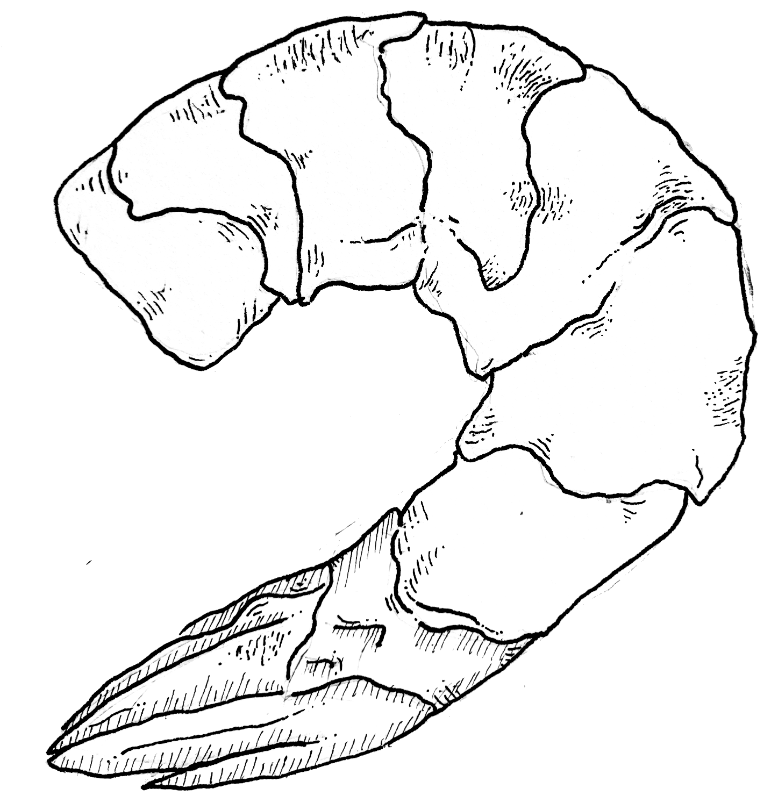

gochujang shrimps
To compliment the bok choy, here's the recipe for gochujang shrimp.

Ingredients
Enough shrimp for whoever you are feeding (hopfully, me..!)
A few tablespoons of gochujang chili paste
About half that amount of honey
A generous splash of toasted seasame oil
Double the above amount but of soy sauce
Green onions for garnish
Preparation
Set the oven to broil.
Mix together the gochujang, honey, sesame oil, and soy sauce.
Dress your shrimp in the marinade.
Place the shrimp in a single layer on a small baking sheet.
(Make it so that the sauce does not stray too far from the fish.)
Broil the shrimp for about 5 minutes total or until opaque.
Turn them about half way through to cook evenly.
Decorate the finished fish with rings of chopped green onion and serve over steamed rice.